GAME · DESIGN
기획 의도와 세계관, 핵심 규칙인 의태, 원정과 서브 콘텐츠, 실서비스 운영, 그리고 제가 만든 에셋을 정리했습니다.
CONCEPT
주인공은 마족의 습격으로 고향을 잃은 변방 마을의 소년입니다. 잊힌 「그림자의 신」과 계약해 자기 그림자를 내주고, 그 대가로 쓰러뜨린 상대의 그림자를 거두는 힘을 얻습니다. 세계관을 먼저 정하고, 게임 규칙이 설정과 어긋나지 않게 맞췄습니다.
| 세계관 설정 | 게임 규칙 |
|---|---|
| 쓰러져 주인을 잃은 그림자만 거둘 수 있다 | 보스를 처치해야 흡수할 수 있음 |
| 그림자는 주인의 동작을 기억한다 | 의태하면 그 보스의 모습과 기술을 그대로 씀 |
| 한 번에 깨워 둘 수 있는 그림자는 많지 않다 | 원정에 들고 가는 그림자 칸이 정해져 있음 |
| 직접 적을 베어야 그림자가 깨어난다 | 싸우면서 의태 게이지를 채워야 함 |
MIMIC
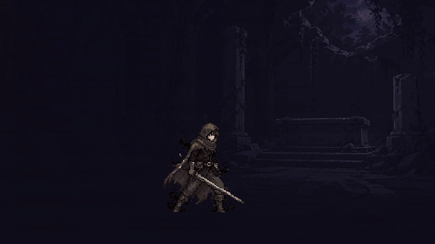
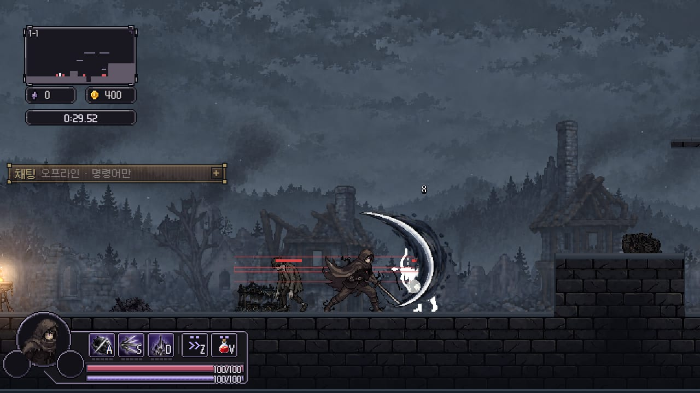
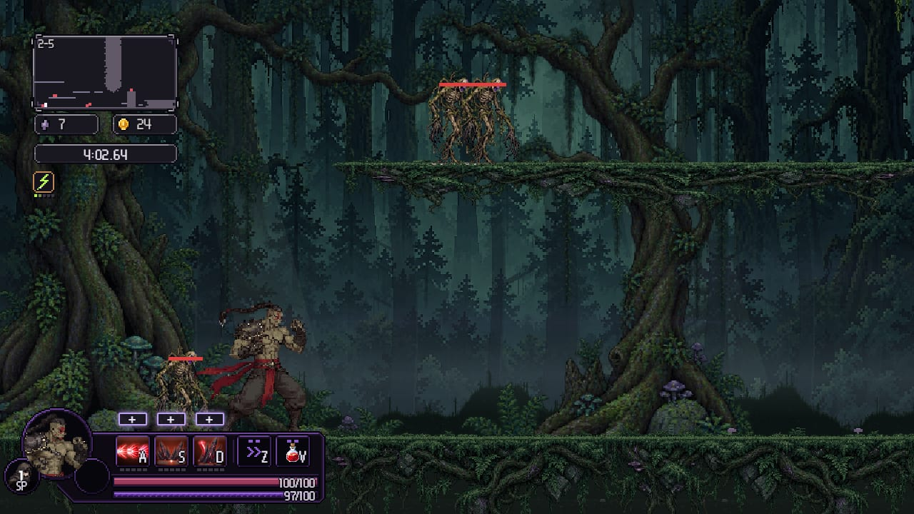
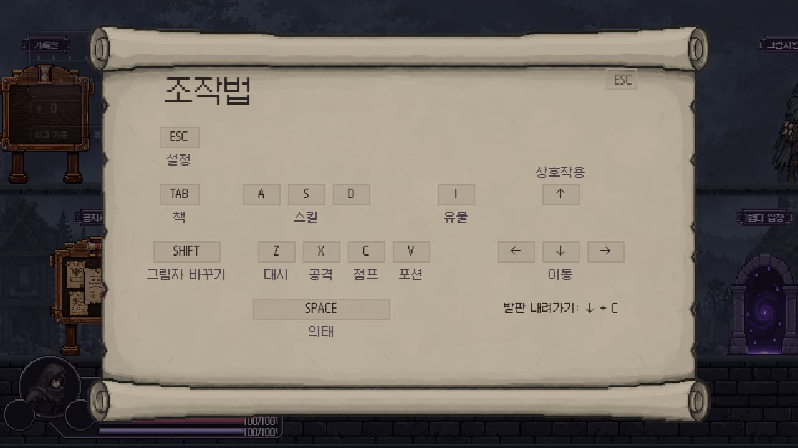
쓰러지면 전부 처음으로 돌아가는 로그라이크로 만들면, 강한 보스에게 계속 도전할 동기가 약해진다고 봤습니다. 그래서 원정이 끝나도 일부가 남는 로그라이트로 정했습니다.
EXPEDITION
광장의 포탈로 원정을 시작합니다. 방을 하나 깰 때마다 다음 방을 고르고, 정해진 수의 방을 지나면 보스방이 나옵니다. 막보스를 쓰러뜨리면 다음 챕터로 이어집니다. 운영 종료 시점에는 폐허, 저주받은 숲, 얼음 산맥 세 챕터가 열려 있었습니다.
몹을 모두 쓰러뜨리면 다음 방 포탈이 열립니다.
몹이 더 강하고 보상도 큽니다.
회복 샘, 성소, 골드 도박, 피의 상점, 유물 합성, 함정 점프맵, 매복 투기장 등.
쓰러뜨리면 그림자를 흡수하고 보스 유물을 고릅니다.
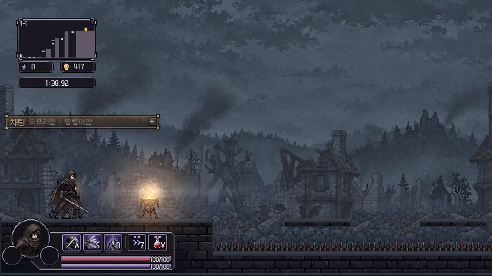
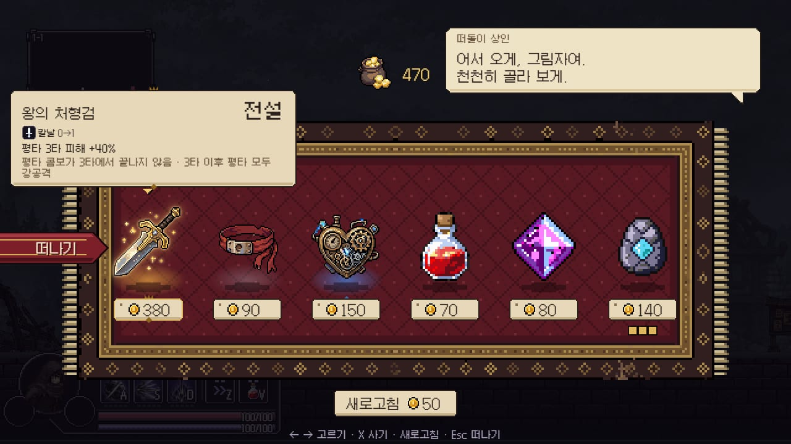
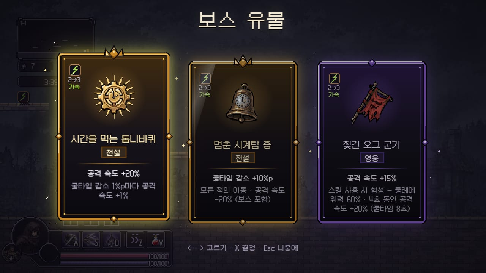
유물은 140개이고 시너지 10종에 14개씩 속합니다. 같은 시너지 유물을 2, 4, 6, 8, 10개 모으면 단계별 효과가 켜집니다.
SUB CONTENTS
제약 15가지 중 원하는 것을 걸고 하는 원정. 깬 제약마다 칭호를 줍니다.
전투 없이 장애물을 넘어 정상까지 가는 점프맵. 광장의 숨은 포탈로 들어갑니다.
층을 계속 내려가며 얼마나 깊이 가는지 겨룹니다.
흡수한 그림자로 다른 플레이어와 싸웁니다. 개인전과 팀전, 최대 8명.
숨어 있는 잠입자를 찾아내는 추리 게임. 회의 채팅으로 투표합니다.
계속 몰려오는 적을 버팁니다. 최대 4명 협동.
병력을 골라 배치해 상대 진영을 무너뜨리는 1:1 대전과 혼자 하는 무한의 탑.
서브 콘텐츠는 원정에 쓴 보스, 스킬, 맵을 최대한 다시 쓰는 방식으로 만들었습니다. 3챕터 중간 보스 잼프리즈는 원정에서는 보스이고, 타워 디펜스에서는 아군을 강화하는 기물, 점프맵에서는 가짜 포탈 옆에 서 있는 장애물로 나옵니다. 새 모드마다 그림을 처음부터 그리지 않아도 되어서 3주 남짓한 운영 기간에 7종을 내놓을 수 있었습니다.
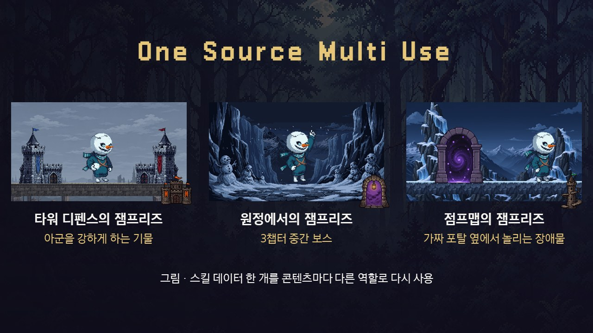
OPERATION
10월 30일에 서비스를 열고 11월 27일까지 운영하면서 15번 업데이트했습니다. 아래 숫자는 11월 22일 18시 5분(KST) 기준 전체 값입니다.
7일째 재방문율은 처음 접속한 날로부터 정확히 7일째에 다시 플레이한 비율입니다. 업계 공개 자료와 같은 방식으로 셌고, PC 게임 상위 10%(6 ~ 7%)보다 높고 모바일 게임 상위 10%(11 ~ 12%)와 비슷한 수준이었습니다.
| 받은 의견 | 반영한 내용 |
|---|---|
| 「접속이 너무 느려요」 | 첫 다운로드 246MB → 116MB, 챕터 입장 25초 → 8초 |
| 「스킬 레벨업이 안 보여요」 | 스킬 칸에 강화 단계 표시 |
| 「키가 어색해요」 | 키 설정 변경 기능 추가 |
| 「포션을 들고 다니고 싶어요」 | 포션 칸 추가 |
| 「의태 스킬에 소리가 없어요」 | 보스, 의태 효과음 추가 |
| 「멀티에선 뭘 하나요?」 | PvP, 그몽어스, 생존 모드, 라인 전쟁 추가 |
| 「묘지기가 너무 세요」 | 보스, 몬스터 밸런스 조정 |
MY ASSETS
게임 그림은 주로 에셋 담당 팀원이 만들었고, 저는 보스 하나와 itch 판 광장, NPC 몇 개를 맡았습니다. 원화를 정한 뒤 PixelLab 으로 도트 그림과 동작 프레임을 만들고 게임 크기에 맞게 다듬었습니다.
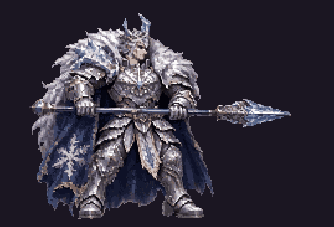
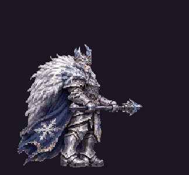
얼음 산맥의 중간 보스입니다. 돌진, 도약 후 내려찍기, 창 던지고 회수, 회전, 걷기 동작을 만들고 얼음 창, 서리 파문, 회전하는 얼음 고리 등 기술 이펙트 10여 종을 따로 만들어 붙였습니다. 공격 패턴과 밸런스, 플레이어가 카이론으로 의태했을 때 쓰는 기술 연결까지 맡았습니다.
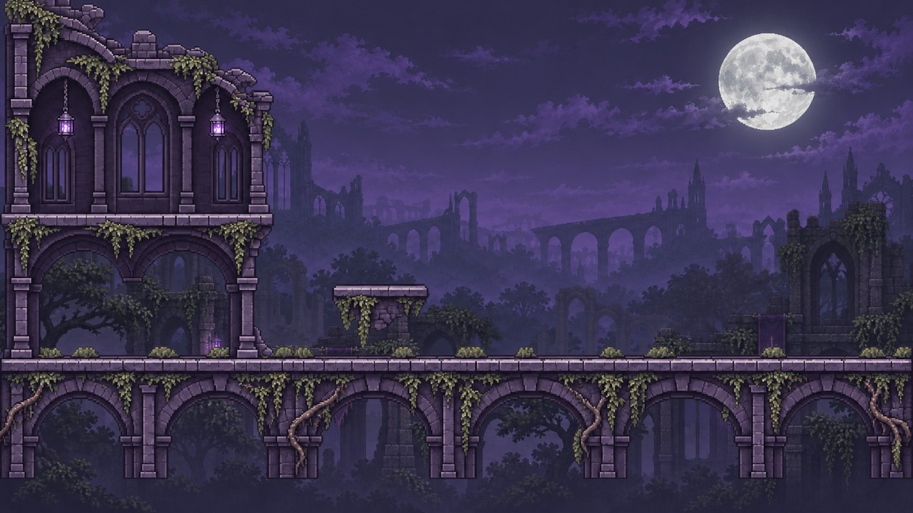
다른 플레이어가 없는 싱글 판이라 시설을 줄이고 배경을 새로 만들었습니다. 원경(하늘, 달, 먼 수도교), 근경(폐허 아치, 나무), 플레이 층(다리, 2층 건물) 세 장으로 나눠 카메라가 움직일 때 층마다 다른 속도로 흐르게 했습니다.
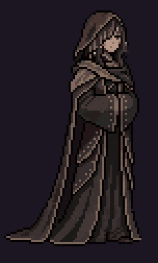
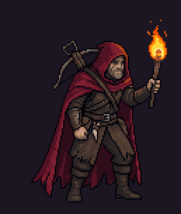
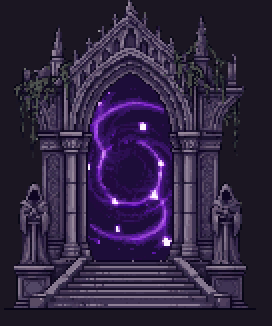
PLAY
운영 서버가 닫혀도 게임을 해 볼 수 있도록 서버와 멀티플레이를 빼고 브라우저에서만 돌아가게 다시 묶었습니다. 원정, 족쇄의 원정, 인내의 탑, 심연의 탑, 생존 모드(혼자)가 들어 있습니다.